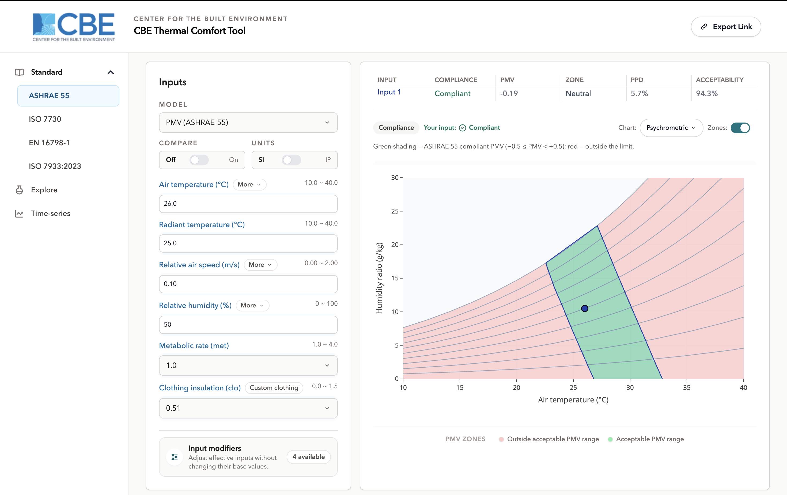
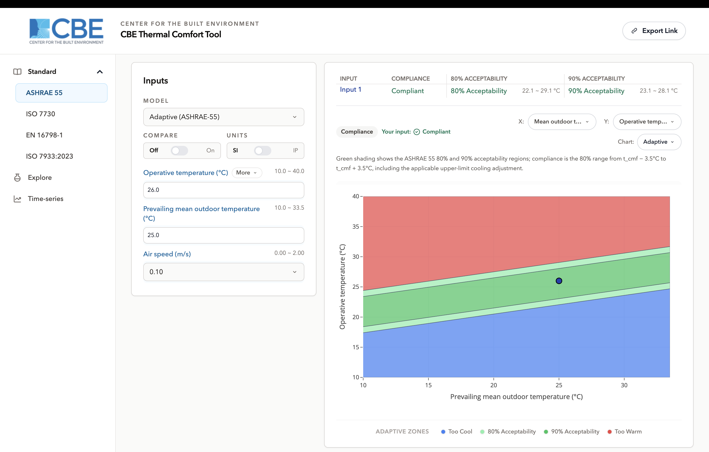

ASHRAE 55
/standard/ashrae-55/2 modelsSharing enabled
Overview
This web-based tool, developed at the Center for the Built Environment, UC Berkeley, performs thermal comfort calculations following ANSI/ASHRAE Standard 55. The ASHRAE 55 workspace is where those calculations are made against the standard itself, and it is the workspace the tool opens on by default.
The interface is arranged in three parts: the workspace navigation on the left, the inputs beside it, and the results and charts to the right. Everything is calculated in your browser as you type there is no calculate button and nothing is sent to a server.

Primary interface components
Navigation and model selection
The left-hand navigation lists the four standards, then the Explore and Time-series workspaces. Within this workspace, the model selector at the top of the input panel offers the two models ASHRAE 55 defines:
- PMV / PPD for mechanically conditioned spaces. This is the default.
- Adaptive comfort for naturally conditioned spaces where occupants can open windows.
Input section
Values are typed directly or stepped with the arrow buttons. Above the input fields are the controls that apply to the whole workspace:
- Model switch between PMV and Adaptive.
- Compare turn on a second and third set of inputs and evaluate them side by side.
- Units switch between SI and IP.
- Share in the header, copies a link that reproduces the current inputs and chart.
How temperature and humidity are entered is itself a choice. Temperature can be supplied as separate air and radiant temperatures or as a single operative temperature, and humidity in any of five forms: relative humidity, humidity ratio, dew point, wet-bulb temperature or vapour pressure. PMV on this workspace additionally carries an air-speed control mode see Comfort assessment methods below.
Results display
The result panel shows the model's outputs and the compliance statement. For PMV that is the predicted mean vote, the predicted percentage dissatisfied, the sensation category, and whether the point is acceptable under the standard. For Adaptive it is the comfort temperature, the acceptability band reached, and the verdict.
A point outside the standard's applicability range is reported as out of range rather than as a pass or a fail. The numbers are still shown; the standard simply does not claim to cover that state.
Visualization charts
Charts are declared by the model, so the chart selector lists a different set depending on which model is active. Across the two models of this workspace there are five:
| Chart | Model | Shows |
|---|---|---|
| Psychrometric | PMV | Humidity ratio against temperature, with relative-humidity isolines and the comfort zone drawn for your inputs. |
| Dynamic | PMV | A banded field over two quantities you choose, coloured by the result. |
| Heat loss | PMV | The components of the body's heat loss against air temperature. |
| SET | PMV | Standard effective temperature across the input range. |
| Adaptive | Adaptive | Indoor operative temperature against prevailing mean outdoor temperature, with the acceptability zones. |
The selector that switches between charts also carries the export options, so any chart can be saved as an image for a report. Each chart offers axis selection where the chart type allows it, and a single legend below the plot.
Comfort assessment methods
PMV / PPD method
The heat-balance method, appropriate to mechanically conditioned spaces. It takes the six factors air temperature, mean radiant temperature, air speed, humidity, metabolic rate and clothing insulation and returns the predicted mean vote and the percentage of occupants expected to be dissatisfied.
Air speed is handled as relative air speed, which includes the movement the occupant generates. Where occupants have local control of the air speed, with a fan for example, the standard permits higher air speeds, and the air-speed control mode setting tells the tool which case applies; it changes the applicability limits used to validate your input. The tool assumes local control is present unless you say otherwise.
The comfort zone on the psychrometric chart is the region where the predicted mean vote stays within the standard's acceptable limits, drawn for the clothing, metabolic rate and air speed you entered so it moves as you change them.
Clothing insulation is accepted up to 1.5 clo under this standard. Full detail of the model is on the PMV (ASHRAE 55) page.
Adaptive method
This approach uses indoor operative temperature and the prevailing mean outdoor temperature. Personal factors and humidity are less significant here, because occupants of naturally conditioned spaces adapt they change clothing, open windows, and adjust what they expect so metabolic rate and clothing are not entered at all.
Two zones are drawn: 80 % acceptability, which is the compliance criterion, and 90 % acceptability inside it for spaces with a higher expectation. Elevated air speed extends the acceptable range upward at warmer indoor temperatures.
Use this method only where occupants genuinely control the openings and mechanical cooling is not in operation.
Additional capabilities
Input modifiers. Four optional adjustments compute one of the model's inputs from something easier to measure. They are available on PMV and are configured together in one editor; see Input modifiers.
Solar gain on occupant. Converts the sun's position and the glazing properties into an increase in mean radiant temperature, and adds it to the value you entered.
Morning clothing estimate. Predicts clothing insulation from the outdoor temperature at 6 a.m., for cases where you are modelling a population rather than a known ensemble.
Dynamic clothing. Reduces the clothing insulation you entered to account for movement at the current metabolic rate. Unlike the previous version of this tool, this correction is applied only when you switch the modifier on it is not automatic.
Measured air speed. Derives relative air speed from a measured still-air value and the metabolic rate.
Clothing ensemble builder. Assembles a clothing value from a garment list organised by body zone.
Compare. Evaluates up to three sets of inputs at once, with per-input visibility and a picker for which set the chart is drawn around.
Unit selection. Toggles between SI and Inch-Pound. Values are held internally in SI and converted for display, so switching back and forth does not drift.
Sharing. The link button copies a URL that encodes the current inputs and chart selection.

Where to go next
- PMV (ASHRAE 55) the model in detail, input by input.
- Explore the same models with selectable axes and editable bands, for investigation rather than compliance.
- Compare mode running three input sets side by side.